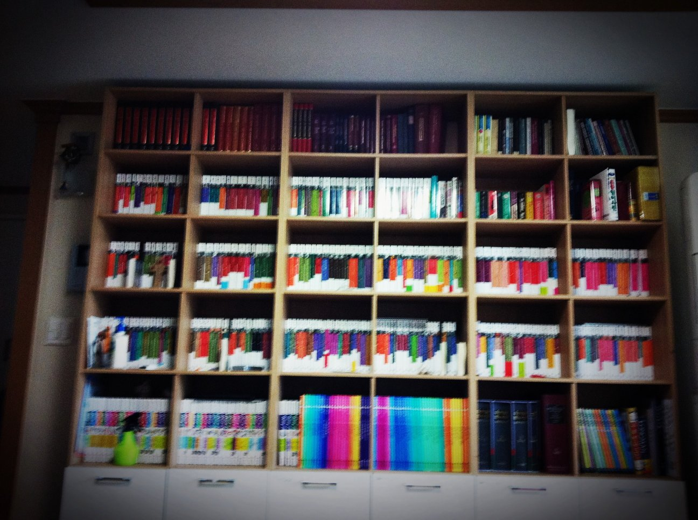
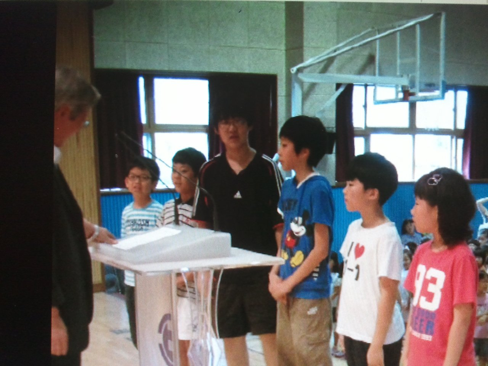

12219042 KANG Jihun Elementary Times
When I was young, I was a boy who liked science. On my way home from school, I enjoyed collecting insects. When I got home, I was busy reading science books and making something with Lego blocks. The knowledge back then is helping me to look at the problem with a scientific perspective even now that I am studying liberal arts. Luckily, I was able to have a chance to participate in the Science Gifted by the local government office. It was a great pleasure for me to conduct the experiment by learning new knowledge every day. Now that I think about it, I think I studied chemical elements such as K and Ca very easily.
My Hobby That Time
 As I said above, my hobbies in elementary school were reading books and assembling blocks. To encourage my hobby, my parents (see sidebar.) filled the living room with books like pictures. There were various kinds of books. There were a wide range of books, from my favorite science books to various humanities books. I read many books whenever I had time, and it became my nourishment. As a child, the sentiments I wrote and read still remain on my my blog.
A Little Boast
 As I will mention later, I participated in the City Hall Science Gifted from 4th grade to 3rd grade in middle school. I visit the science museum every Wednesday. I took lessons from professional teachers. Also, I worked on my own various projects. In the process, I was able to get various awards.